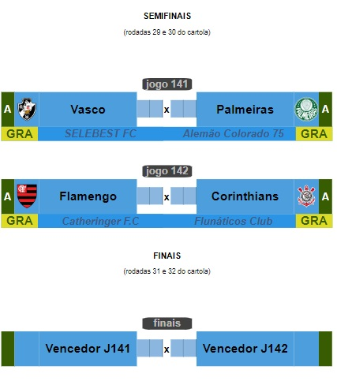

Campeonato de Cartola
A vitória no cartola é o sucesso do seu time!

Redação Cartola - 01/10/2024 - 22h03min
Chegamos às semifinais da principal Copa Interna da temporada assegurados de dois grandes confrontos a envolver o que há de melhor na liga "CDC" (Campeonato de Clubes de Cartola). No primeiro confronto teremos o Palmeiras do "Alemão Colorado 75" contra o Vasco da Gama do "SELEBEST FC". O Palmeiras obteve claasificação apertada contra o franco atirador Amazonas FC, do estreante "Zecapagordinho23". Com uma vitória para cada lado, Palmeiras passou graças ao critério de clube de maior grandeza. No Vasco, a parada foi mais fácil ao garantir 2 x 0 no jogo de volta contra o Sport Recife do "Gardena Show", Campeão Nacional de 2023, cujo primeiro foi um empate em 4x4.
No jogo dois das semifinais, Flamengo do "Catheringer F.C" passou pela Internacional de Limeira do Estreante "Milaneros" sem vencer o adversário, fechando o confronto com dois placares em igualdade, no primeiro 4x4 e no segundo em 2x2. A exemplo do Palmeiras, Flamengo avançou pelo critério da "camiseta mais pesada." Duelo do mengão será o temidíssimo Corinthians do 'FLUNÁTICOS CLUB', maior e mais prestigiado técnico do universo de tecnicos de clubes de cartola, único dos técnicos desta semifinal no comando do clube desde a primeira fase desta Copa do Brasil, tendo tombado nada menos que sete clubes até aqui: Tocantinópolis, Sousa-PB, Remo, Volta Redonda, Bahia, Atlético-GO e, por último, o cambaleante Botafogo do "Salão Central FC".
O fato mais picante dos dois jogos que farão a semifinais da competição será mais o alto nível dos comandantes das quatro agremiações envolvidas do que propriamente o gigantismo dos clubes classificados. Se trata de cartoleiros de "primeira partileira" no ranking de técnicos. No Palmeiras, "Alemão Colorado 75" foi campeão Nacional de 2022. No Flamengo o maestro é o cartoleiro Brenner Catheringer, de login "Catheringer F.C", Campeão da Copa Libertadores 2022, enquanto no Corinthians temos o Flunáticos Club, multicampeão, de longe o maior técnico de todos os tempos, estando a sonhar com nada menos que o tricampeonato desta Copa do Brasil. O quarteto de candidatos ao título se fecha com mestre "SELEBEST FC" , do cartoleiro Edvan, técnico do Vasco da Gama , proprimente o clube do seu coração. Bicampeão carioca 2023/2024 com o vascão, acumulando vice-campeonato nacional do ano passado, aliado à vice-liderança da divisão de elite até a presente rodada no mesmíssimo clube, faz do "SELEBEST FC", senão avalizado pelo ranking geral de técnicos, atualmente na 13ª posição, um grande candidato ao título, uma vez que ninguém vem tendo uma regularidade tão boa quanto ele nestas duas últimas temporadas.
Os jogos desta semifinais da Copa do Brasil estão marcados para as próximas duas rodadas e contará com a cobertura completa do site oficial da "CDC". 